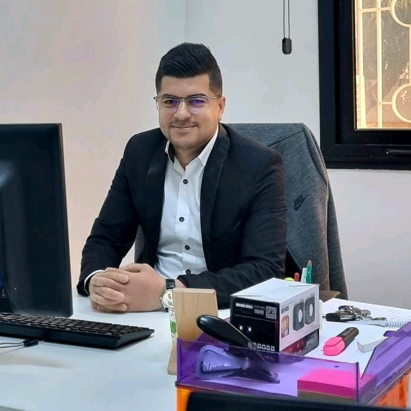

Ameur Taboui
Développeur Full-Stack Java / Angular Senior
Ariana, Tunisie
Développeur Full-Stack Java senior avec plus de 6 ans d’expérience dans la conception et la modernisation de plateformes de crédit, de leasing et de management de la qualité avec Java 8/17/21, Spring Boot 3, Angular et Vue/Nuxt. A livré des composants backend et des intégrations WSO2 pour un système central multi-pays prévu dans 10 pays, et a encadré des équipes dans un contexte Agile international. Reconnu pour un code propre et bien testé, l’optimisation SQL et une documentation technique claire.
👉 amertaboui@gmail.com
👉 +216 24 311 407
Expérience professionnelle
Teamwill | Ingénieur Développement Full-Stack
Tunis, Tunisie · Mai 2023 – Présent
- Pilotage des revues de qualité de code et de sécurité sur 3 équipes de livraison, avec application des standards et des contrôles de conformité pour maintenir un faible taux de défauts en production.
- Encadrement de 4 développeurs juniors et coordination de la livraison avec les parties prenantes clients, pour tenir les délais et répondre aux attentes.
- Construction et maintenance d’intégrations de données avec des systèmes internes et externes, et mise à jour de la documentation projet à chaque version.
Mobilize Financial Services (MFS) — Plateforme multi-pays de Crédit & Leasing
Jan. 2025 – Présent
- Développement de composants backend Java / Spring Boot 3 pour le Core System multi-pays basé sur Sofico Miles, avec un déploiement prévu dans 10 pays d’ici 2030.
- Livraison de plus de 25 intégrations de services métiers via WSO2 (ESB / API Gateway), avec des API REST documentées sous Swagger pour les systèmes internes et partenaires.
- Support du déploiement pilote aux Pays-Bas (tests d’intégration, configuration, migration de données), avec une mise en production sans défaut critique.
- Collaboration avec les équipes d’Allemagne, d’Espagne et d’Italie au sein d’un Centre d’Excellence Agile international ; développement de modules Vue / Nuxt avec plus de 80 % de couverture Jest.
PSA Stellantis — Plateforme de gestion financière EKIP360
Mai 2023 – Sep. 2024
- Maintenance et évolution de la plateforme de gestion des opérations de crédit EKIP360 (Java/JEE, Spring Boot, PostgreSQL), avec plus de 30 évolutions et correctifs livrés en production.
- Optimisation des procédures PL/SQL, triggers, vues et programmes Pro*C, réduisant d’environ 35 % la durée des traitements par lots.
- Conception et tests de Web Services automatisant les opérations financières récurrentes, avec environ 40 % de traitement manuel en moins.
- Résolution des incidents de production, déploiement des correctifs sur tous les environnements et rédaction d’une documentation technique accélérant l’intégration des nouveaux arrivants.
AFNOR International IT Engineering | Ingénieur Développement Full-Stack
Tunis, Tunisie · Fév. 2020 – Avr. 2023
- Prise en charge du cycle complet des produits web : analyse des besoins, architecture logicielle, développement selon les spécifications et conception des bases de données.
- Déploiement et installation des logiciels chez les clients, et gestion du développement et de la maintenance des bases de données sur plusieurs gammes de produits.
- Livraison de 4 applications web d’entreprise sur une pile commune Spring / Hibernate / Angular / PostgreSQL, favorisant la réutilisation entre projets.
- Rédaction des spécifications fonctionnelles et techniques de chaque version, réduisant d’environ 20 % les retours entre analyse et développement.
GeniA Automotive — Système de Management Intégré (IATF 16949)
Fév. 2020 – Jan. 2022
- Conception de l’architecture et mise en œuvre d’un système de management intégré conforme à IATF 16949 et aux exigences OEM/OES (Spring, Hibernate, Angular, PostgreSQL).
- Développement de plus de 15 modules configurables (documents, audits, non-conformités, actions correctives), adaptables aux processus de chaque client.
- Optimisation des requêtes SQL et des schémas de base de données, réduisant d’environ 40 % les temps de génération des rapports sur de gros volumes.
- Prise en charge de l’analyse des besoins, du déploiement et de l’installation, réduisant d’environ 30 % le délai de mise en route des clients.
GeniA ISO 9001 — Système de Management Web
Mars 2023 – Avr. 2023
- Développement d’une solution web de gestion de la qualité entièrement conforme à la norme ISO 9001, adaptable au secteur automobile et à d’autres secteurs.
- Réutilisation de l’architecture du noyau GeniA, accélérant la livraison d’environ 30 % tout en conservant une base de code unique et maintenable.
- Digitalisation de la gestion documentaire, des audits et des processus, en remplacement d’un suivi manuel sous tableurs.
Application web Customer Production Management (CPM)
Mars 2023 – Avr. 2023
- Conception et développement d’un outil CPM intégré (Spring, Hibernate, Angular, PostgreSQL) pour gérer clients, prospects, projets, dépenses et ventes.
- Mise en place de 6 vues de reporting (ventes, projets, délais, coûts, facturation, TVA) offrant à la direction une vision opérationnelle consolidée.
- Centralisation et archivage des données opérationnelles et financières, améliorant le suivi des marges et la rapidité de décision.
Formation
Master en Systèmes et Réseaux de Télécommunications
Faculté des Sciences de Tunis · Sep. 2017 – Déc. 2019
Architectures réseaux, systèmes de télécommunications et applications distribuées.
Licence appliquée en Informatique
ISET – Institut Supérieur des Études Technologiques, Tunis · 2014 – 2017
Spécialité : Développement des Systèmes d’Information (programmation orientée objet, bases de données, développement web).
Baccalauréat en Informatique
Lycée Bab El Khadhra, Tunis · 2014